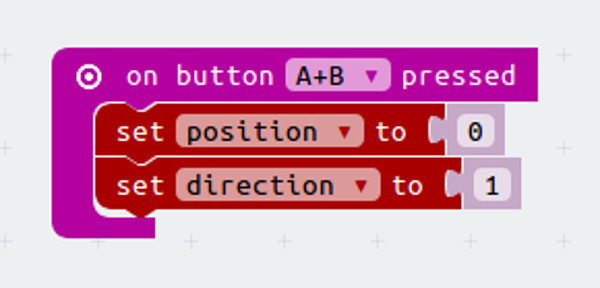
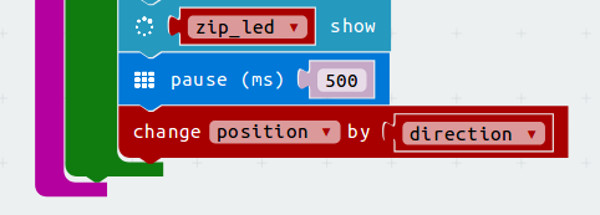
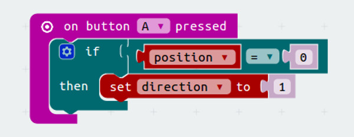
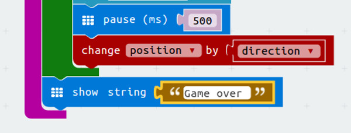

For this project, you will need:
- 1 × Microbit
- 1 × Zip Halo
- 2 × 4.5V battery box with jst connector

A Zip Halo is a ring of 24 lights that can be programmed to be any colour we like. In this project we will use the top half of the light ring to make a juggling game. Pressing the A and B buttons will be how the player juggles the ball.
For this project, you will need:
We need to add a new package to give us blocks to control the pixels. In advanced click on ‘Add package’. Search for ‘neopixel’ and add the package. This will add a new set of blocks called ‘Neopixel’

There are twenty four lights or ‘pixels’ on our rings, in code we start counting at zero so the lights are numbered 0,1,2,3...23. We will only be using the top ones, numbers 1, 2, 3, 4, 5, 6, 7 and 19, 20, 21, 22, 23, 24. To help us keep track of the lights we are using we will use a new block called an array. An array is a variable that can hold a list instead of just one thing.
Open this link to find today’s code. https://makecode.microbit.org/_Hyc3F4FP1F73
This code already has a variable called pixel_number set to a ‘create array with’ block. We are going to use this to make a list of the pixels we need for our game in the order they are on the zip halo.
We want to list all the pixels on the top of the board, starting with the one on the left and working round to the one on the right.
Fill in the rest of the numbers in the array. Remember that we start counting at zero in code, but the numbers printed on the board start at one. So we will call the pixel labelled one as 0, the one labelled 2 as 1 the last pixel labelled 24 will be 23 in our code.
You should end up with an array that looks like this.
Create a variable called zip_halo, we’ll use this to set up the Zip Halo.
Add a set zip_halo to block to your code.
Add the block from Neopixels that starts ‘Neopixel at P0..’ and join this to the set zip_halo block. This block tells the microbit how many pixels our board has and which pin we are using to control it.
Your code should now look like this.
We will start the game by pressing A+B so get an ‘On button A+B pressed' block.
Create two new variables called; ‘position’ and ‘direction’.
Position will remember where our ball is. We will start at 0, the first position on our list.
Direction is what we use to remember which way it’s moving. This will either be 1 if the ball is moving left to right, or -1 if the ball is moving right to left.
Add set blocks for these new variables to the ‘On button A+B' block.
Next add a ‘While’ block from loops. This loop will keep running the code we add to the ‘do’ part over and over as long as the code we add to the ‘while’ part is true.
In our game we want to light the first pixel in our array, wait for a little bit and then turn it off and light the next one. If we keep doing this it will look like the light is moving across the board. We want to keep doing it until we get to the end of our list.
In the while part of the loop add this code.
This checks that the value stored in ‘position’ isn’t bigger than the number of items in our list or smaller than 0.
Now in the ‘Do’ part add some blocks to control the neopixels. They will all need to be set to zip_halo instead of item so the code knows to use the lights we set up in the 'On start block'.
First add a clear block to turn all the lights off
Then add a 'Set pixel colour at' block, you can set this to any colour you like.
The pixel number should be the value stored in our ‘pixel_number’ list at the number place stored in our 'position' variable.
Use a ‘Get value at’ block from arrays and set it up like this.
Next add two more set pixel blocks, set them to 17 and 7, these will be your hands when you are juggling. They can be any colour you like but should be different to your ball.
Finally add a show block to turn on the lights we have just set up.
At the end of the While section add a ‘change’ block from variables. Use this to change the value stored in ‘position’ by the number stored in ‘direction’.
We will also need a pause 500 block at the end of this loop to stop the ball moving too quickly.
Download this code to your microbit and see what happens.
The board should show lights starting at the left and moving across to the right and then stop.
So now all we need to do is add some controls to tell the game when to juggle. We’ll use the A and B buttons for this.
'Add an On button A pressed block.'
Next add an If block, use a block from ‘Logic’ to check if ‘position’ equals 0.
Here we are making sure the ball is next to the hand when the button is pressed.
Inside the if block change the value stored in direction to 1.
Duplicate all this code for on button b pressed but this time check if position equals one less than the length of the array. If it is change the value in direction to -1.
Download this code to your Microbit.
Pressing the A or B buttons when the ball is next to the hand should make it juggle.
You can make your Microbit juggle, but it's not really a game yet.
Add some code after the while loop, this will run if the player drops the ball.
You can write a message to the screen, or flash the lights
Can you add a score that increases by one every time you succesfully juggle the ball?
What about adding code to increase the speed of the ball slightly every time you score a point?